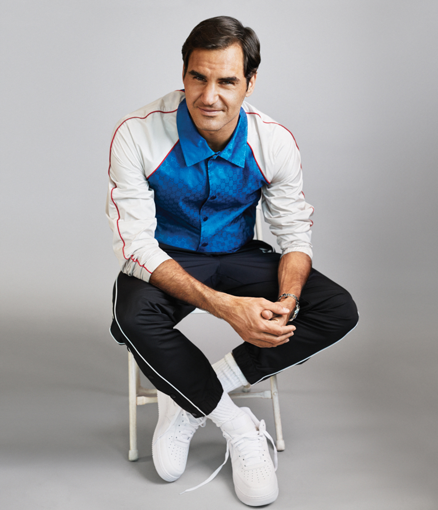

Roger Federer
- Titres : 99
- Grands Chelem : 20
Roger Federer, né le 8 août 1981 à Bâle (Suisse), est un joueur de tennis suisse. Joueur professionnel depuis 1998, il détient le record de 310 semaines passées à la première place du classement mondial de tennis ATP World Tour, dont le record de 237 semaines consécutives, ainsi que le record masculin de 20 victoires dans les tournois du Grand Chelem. Il est médaillé d'or en double messieurs avec Stanislas Wawrinka aux Jeux olympiques de Pékin 2008 puis vice-champion olympique en simple à Londres en 2012. Enfin, en 2014, il remporte la Coupe Davis avec l'équipe de Suisse, en battant en finale l'équipe de France1.
Roger Federer a gagné à ce jour 99 titres, dont 26 tournois majeurs et 27 Masters 1000. Sa victoire à Roland-Garros en 2009 lui a permis de réaliser le Grand Chelem en carrière sur cinq surfaces différentes. Avec 11 finales à Wimbledon, il partage avec Rafael Nadal (11 finales à Roland-Garros) le record du nombre de finales dans un même tournoi du Grand Chelem et est le recordman de victoires à Wimbledon, avec huit succès entre 2003 et 2017. Parmi ses nombreux records, on peut également souligner ses dix finales, vingt-trois demi-finales et trente-six quarts de finale consécutifs dans les tournois du Grand Chelem.
Il est le seul joueur de l'histoire du tennis à avoir gagné au moins cinq fois trois tournois du Grand Chelem (l'Open d'Australie, le tournoi de Wimbledon et l'US Open), détient avec Björn Borg le record de titres consécutifs au tournoi de Wimbledon durant l'ère Open (cinq), et a réalisé trois fois le Petit Chelem (en 2004, 2006 et 2007). Il est également le seul joueur à avoir joué la finale de chaque tournoi du Grand Chelem au moins cinq fois, et le seul à avoir remporté 6 fois le Masters de fin d'année.
Le 19 février 2018, il devient le no 1 mondial au classement ATP le plus âgé de l'histoire, à l'âge de 36 ans 6 mois et 11 jours. Il perfectionne ce record la même année le 14 mai puis le 18 juin, à 36 ans et 10 mois.
Il a un style de jeu très agressif. Cela lui permet de réussir de nombreux coups gagnants, sans attendre la faute de ses adversaires. Sa vision du jeu combinée à une excellente maîtrise de sa raquette, ce qui lui permet de produire un jeu varié et de s’adapter à tous les adversaires.